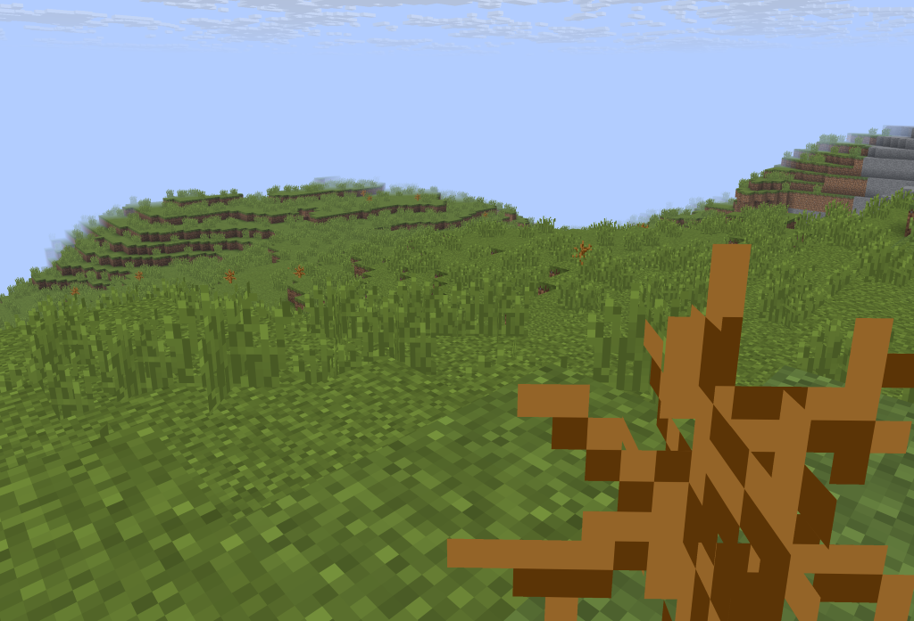
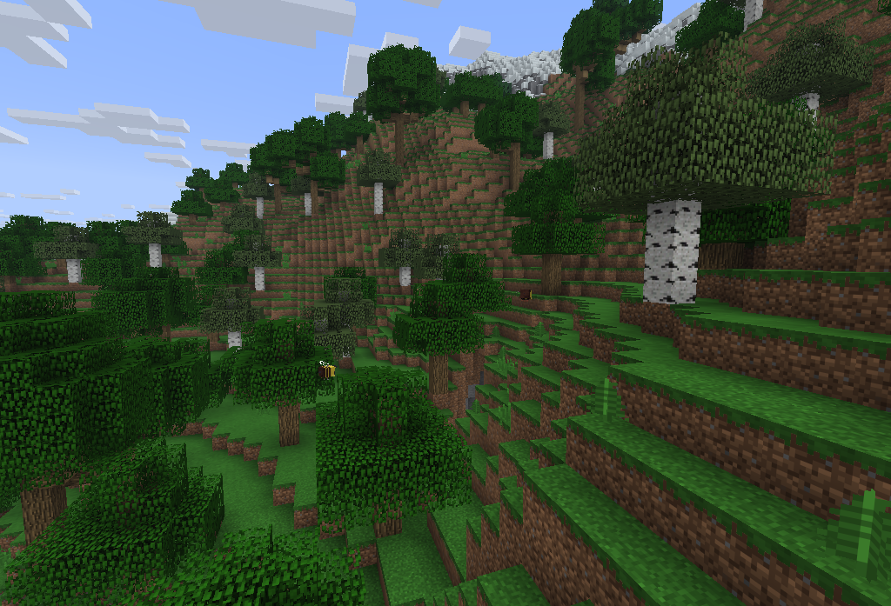
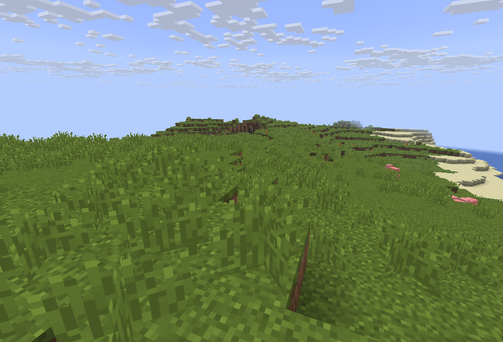

| Biome name | Description | Screenshoot |
|---|---|---|
| Shrubland | The shrublands are largely identical to the savanna biome, featuring few trees and no tall grass. Along with swampland, it is one of the smallest biomes in the game, rarely being larger than a few chunks. |  |
| Rainforest | Rainforests were lush, wet biomes with many trees, which had a 1 in 3 chance of being large trees, instead of 1 in 10 like all other biomes. They were similar to forests but had a large amount of tall grass and ferns and lush green grass due to temperature and rainfall requirements. |  |
| Flat Plains | Flat Plains are large variants from the classic plains biome, with some minor diferential details: they are like the name say more plains, apearing near beaches, without any flowers only grass and some pumpkins. |  |